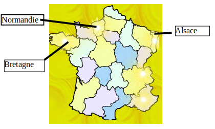
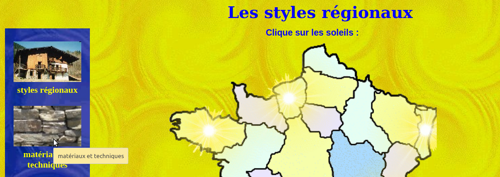

Les matériaux d’une maison : diversité et propriétés
L’objectif est d’identifier des matériaux utilisés dans des maisons géographiquement différentes, ainsi que leurs caractéristiques.
Compétences travaillées : identifier les matériaux et leur propriétés dans le cadre d’une production technique sur un objet.
activité 1 : quels sont les matériaux utilisés dans les habitats suivants ? Pour quelle raison ?
travail à faire : à l’aide des sites proposés ci-dessous, choisir une ou plusieurs maisons traditionnelles, cliquer sur les liens en bleu et sur une feuille de brouillon, relever : les matériaux utilisés et les raisons de leur utilisation
Activité préparatoire à l’activité 2 : recherche de définitions:
- crachin, granit, schiste, pisé
Activité 2 : Quels sont les matériaux utilisés dans les différentes régions de France ? Quelles sont leurs propriétés ?
document élève
Ouvrir le site maisonsregionales.free.fr
Sélectionner “les styles traditionnels”

Travail à faire: Cliquer sur les soleil»
Pour chaque maison traditionnelle des régions suivantes : bretagne, normandie et alsace , relever :
- les matériaux offerts par la géographie locale (toit et murs).
- pour quelles contraintes climatiques utilise-ton ces matériaux

Rechercher le vocabulaire non connu
bilan :
Les bâtiments utilisent des matériaux :
en fonction de leur disponibilité géographique
pour supporter les intempéries, conditions climatiques (froid, humidité, chaud, eau, neige, vent)
pour leurs propriétés (léger, isolant, démontable, solide)
Pour aller plus loin : Cliquer sur « matériaux et techniques » et expliquer pour quelles contraintes climatiques on utilise ces matériaux dans nos régions :
